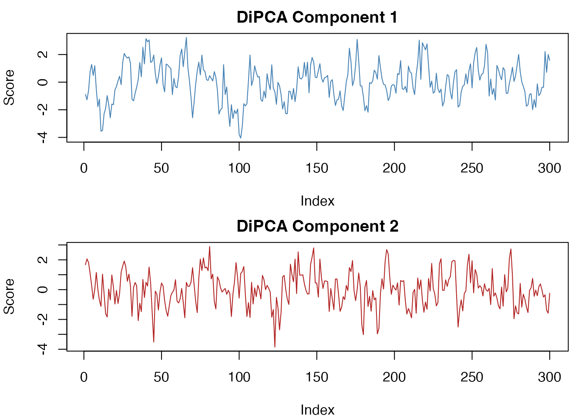

dipca.RmdStandard PCA finds directions of maximum variance, but it ignores temporal structure. When your data are multivariate time series, the most interesting directions are often those that are predictable from their own past – not merely high-variance. The dipca package provides three methods that extract such temporally structured latent components:
| Method | Function | Objective |
|---|---|---|
| DiPCA | dipca() |
Maximize autocovariance of latent scores |
| DiCCA | dicca() |
Maximize canonical correlation between scores and their AR prediction |
| DiPLS | dipls() |
Maximize dynamic cross-covariance between an input block X and output block Y |
All three return objects that integrate with the multivarious
framework, so you get scores(), project(),
reconstruct(), predict(), and
residuals() out of the box.
library(dipca)
library(multivarious)Simulate a multivariate time series with two hidden dynamic components, fit DiPCA, and recover them in a few lines:
set.seed(42)
N <- 300; m <- 6
# Two latent AR(1) processes with different dynamics
t1 <- arima.sim(list(ar = 0.8), n = N)
t2 <- arima.sim(list(ar = 0.4), n = N)
# Mix into 6 observed variables + noise
P <- qr.Q(qr(matrix(rnorm(m * 2), m, 2)))
X <- cbind(t1, t2) %*% t(P) + matrix(rnorm(N * m, sd = 0.3), N, m)
# Fit DiPCA: extract 2 components with lag order 1
fit <- dipca(X, s = 1, l = 2, n_init = 3)
# Recovered scores
head(scores(fit))
#> [,1] [,2]
#> [1,] -0.8905321 1.6762321
#> [2,] -1.2752169 2.0638961
#> [3,] -0.6266240 1.8228701
#> [4,] 0.7440956 1.0886892
#> [5,] 1.2838800 0.2802776
#> [6,] 0.4841643 -0.6466063The fitted object is a bi_projector from multivarious.
You can project new data, reconstruct, or forecast with familiar generic
functions.
dipca() extracts components that maximize autocovariance
– a balance between capturing variance and being temporally
predictable.
fit_pca <- dipca(X, s = 1, l = 2, n_init = 3, max_iter = 500)Scores are the latent time series:
T_hat <- scores(fit_pca)
par(mfrow = c(2, 1), mar = c(4, 4, 2, 1))
plot(T_hat[, 1], type = "l", col = "steelblue",
ylab = "Score", main = "DiPCA Component 1")
plot(T_hat[, 2], type = "l", col = "firebrick",
ylab = "Score", main = "DiPCA Component 2")
Prediction uses the fitted VAR model on the latent scores:
pred <- predict(fit_pca, X)
# R-squared for each component
r2 <- sapply(1:2, function(j) {
ok <- !is.na(pred$scores_hat[, j])
cor(pred$scores[ok, j], pred$scores_hat[ok, j])^2
})
cat("Component R-squared:", round(r2, 3), "\n")
#> Component R-squared: 0.473 0.212Reconstruction maps scores back to the original variable space:
X_hat <- reconstruct(fit_pca)
cat("Reconstruction RMSE:", round(sqrt(mean((X - X_hat)^2)), 4), "\n")
#> Reconstruction RMSE: 0.2467Residuals provide a dynamic whitening filter – the temporal structure is removed:
res <- stats::residuals(fit_pca, X)
# Compare autocorrelation before and after whitening
acf_before <- mean(sapply(1:m, function(j)
acf(X[, j], lag.max = 1, plot = FALSE)$acf[2]))
acf_after <- mean(sapply(1:m, function(j) {
ok <- is.finite(res$e_hat[, j])
if (sum(ok) > 10) acf(res$e_hat[ok, j], lag.max = 1, plot = FALSE)$acf[2]
else NA
}), na.rm = TRUE)
cat("Mean lag-1 ACF -- original:", round(acf_before, 3),
" residuals:", round(acf_after, 3), "\n")
#> Mean lag-1 ACF -- original: 0.524 residuals: 0dicca() extracts components in descending order of
predictability (R-squared). This is useful when you want the most
dynamic features first.
fit_cca <- dicca(X, s = 1, l = 2, inner = "classic", n_init = 3)
cat("DiCCA R-squared per component:", round(fit_cca$R2, 3), "\n")
#> DiCCA R-squared per component: 0.474 0.218DiCCA also supports compact inner models (inner = "ar"
or "arma") that fit AR/ARMA models per component instead of
a joint VAR:
fit_ar <- dicca(X, s = 1, l = 2, inner = "ar", n_init = 2)The same predict(), residuals(), and
reconstruct() methods work for both classic and compact
variants.
When you have both input (X) and output (Y) blocks,
dipls() finds dynamic latent components that maximize the
cross-covariance between X-scores and Y-scores through a lagged inner
model.
# Simulate an output block driven by the first latent component
beta_true <- c(0.7, -0.3)
u <- stats::filter(t1, beta_true, sides = 1)
Y <- cbind(u, 0.5 * u + rnorm(N, sd = 0.2))
Y[is.na(Y)] <- 0
fit_pls <- dipls(X, Y, n_comp = 1, s = 1, mode = "fir", verbose = 0)
# Predict Y from X
Y_hat <- predict(fit_pls, X)
ok <- !is.na(Y_hat[, 1])
cat("Y prediction R-squared:",
round(cor(Y[ok, 1], Y_hat[ok, 1])^2, 3), "\n")
#> Y prediction R-squared: 0.915All fitted objects support project() to transform new
observations into the latent space:
vignette("extracting-dynamic-components") – a deeper
walkthrough with simulated ground-truth data, subspace recovery metrics,
and method comparisons.?dipca, ?dicca, ?dipls – full
parameter documentation.